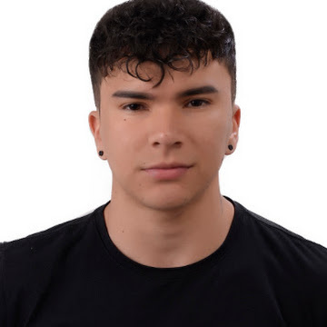

CONTACTO
📞
3124476346
📧
vfranklinestiven@gmail.com
📍 Calle 21E #11E 35, Pasto - Nariño
🌐
Facebook
EDUCACIÓN
2020 - 2025
Universidad de Nariño
Ingeniería de Sistemas
Promedio: 4.5 / 5.0
2024
Diplomado en Desarrollo Web Full Stack
2024
Curso Intensivo de Idiomas (Inglés, Francés, Alemán)
HABILIDADES
- Creatividad
- Liderazgo
- Pensamiento crítico
- Trabajo en equipo
- Gestión de proyectos
- Comunicación efectiva
- Resolución de problemas
PERFIL
Ingeniero de Sistemas graduado en 2025 de la Universidad de Nariño. Apasionado por la programación, con dominio de Python, Java, C++ y Ruby.
Hablo español, inglés, francés y alemán.
Experiencia laboral en desarrollo web, soporte técnico y automatización de procesos.
Me considero proactivo, con facilidad para adaptarme a nuevos entornos y con gran capacidad de aprendizaje.
EXPERIENCIA LABORAL
Desarrollador Junior – Empresa en Medellín (2024)
Desarrollo de aplicaciones web, mantenimiento de bases de datos y soporte técnico.
- Diseño e implementación de módulos funcionales
- Optimización de consultas SQL
- Soporte remoto a clientes
Proyectos Universitarios – Universidad de Nariño
Desarrollo de sistemas de gestión, aplicaciones móviles y soluciones de automatización.
LENGUAJES DE PROGRAMACIÓN
| Lenguaje |
Nivel |
| Python | Avanzado |
| Java | Intermedio |
| C++ | Intermedio |
| Ruby | Básico |
REFERENCIAS
Juan Pérez – CTO, TechCorp
📞 3001234567
📧 juanperez@techcorp.com
María Gómez – Gerente de Proyectos, SoftSolutions
📞 3019876543
📧 mariagomez@softsolutions.com